Part C：专题内容方块 — 玩法/内容
按周次聚合同一主题在不同周报中的原文、原图与 mkk 评语。
C8. 瓜雕生命周期（完整追踪）
追踪范围：W14 上线 → W20 下线（7 周） | 当前状态：已下线
W14 原文（2024.10.14-10.20）
"瓜雕"爱好于10.19日上新。玩家解锁购买南瓜种子，在家园内生产灵奇南瓜，最后制作瓜雕
周末两天，瓜雕参与率60%，人均参与次数13次，人均等级1.4。参与度高于同期沙雕爱好
南瓜雕刻出品星级中，有37%是2星，38%是3星，5星数量较少，不足1%
大部分玩家的南瓜爱好等级仍处于1级，小部分处于2-3级，4-5级玩家较少
50%的玩家南瓜雕刻次数为10次以下
雕刻南瓜参与率较高，复玩率（第二天继续雕刻）较高
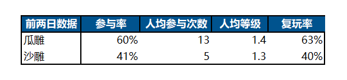
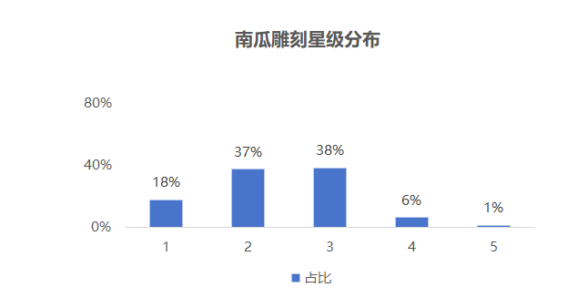
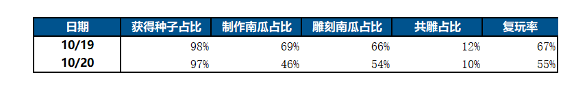
📎 原文：第十四周周报
W16 原文（2024.10.28-11.03）
瓜雕参与率22%（-12pp），人均次数4次（-3）
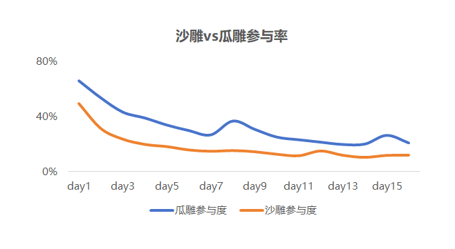
📎 原文：第十六周周报
W17 原文（2024.11.04-11.10）
瓜雕参与率17%（-5pp），人均次数2次（-1）
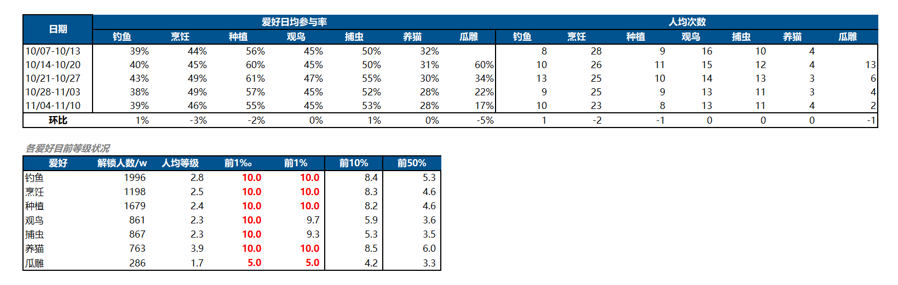
📎 原文：第十七周周报
W18 原文（2024.11.11-11.17）
瓜雕参与率14%（-3pp），人均次数2次（-1）

📎 原文：第十八周周报
W19 原文（2024.11.18-11.24）
瓜雕参与率20%（+6pp），人均次数3次（-1）
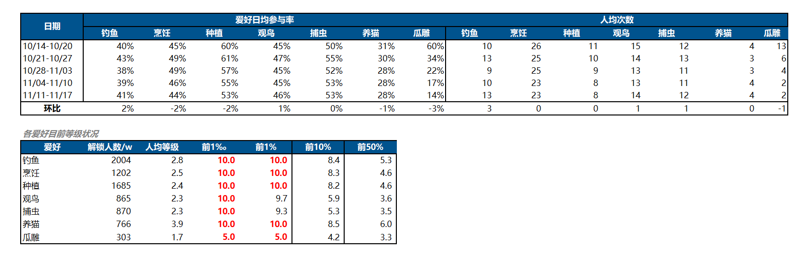
📎 原文：第十九周周报
W20 原文（2024.11.25-12.01）
瓜雕 爱好于上周六下线
参与率：钓鱼36%（+2pp）、烹饪45%（-3pp）、种植54%（-4pp）、观鸟44%（-2pp）、捕虫49%（-2pp）、养猫25%（-2pp）、瓜雕12%（-8pp）
人均次数：钓鱼3次（+3）、烹饪29次（+4）、种植8次（-1）、观鸟11次（-1）、捕虫8次（0）、养猫3次（0）、瓜雕3次（-1）
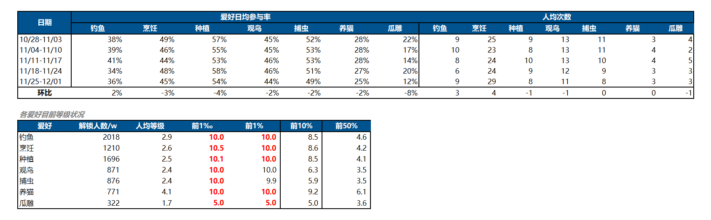
📎 原文：第二十周周报
📌 mkk 评语
瓜雕展示了季节性玩法的典型生命周期——首周爆发(60%) → 3 周急速衰减至 ~15% → 低位波动 → 下线。从 60% 到 15% 只用了 3 周，说明纯装饰类玩法的内容消耗速度极快，需要搭配持续更新的成长体系才能延长生命周期。
C9. 家园共建
追踪范围：W13（一次性分析） | 当前状态：W13 后未再出现
W13 原文（2024.10.07-10.13）
整体情况：以DAU为分母来看，共建功能整体参与率低，仅7%左右；参与共建的人中，每日人均参与次数约1.7次，每日人均时长40min左右
参与深度：共建时长：55%的单次共建时长不足5分钟
分发展家等级看：70%共建中，共建主人的发展家等级为20-40级；10级以下玩家参与率较低，20级以上玩家参与率超过10%
46%的共建仅主人自己参与，48%的共建有2人参与。共建功能支持最多4人同时共建，但目前看来多人共建的占比较少
申请加入共建占比约三分之一，通过邀请好友加入共建的占比约三分之二
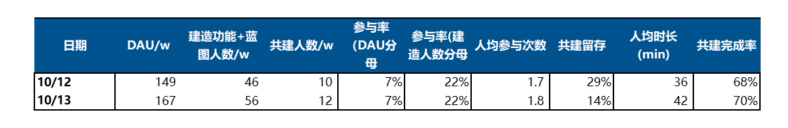
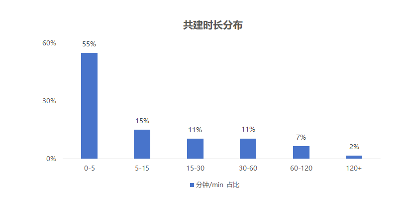
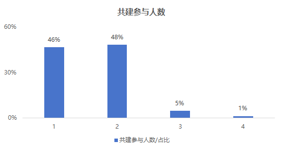
📎 原文：第十三周周报
📌 mkk 评语
功能深度不足，社交拉动有限。整体参与率仅 7%，55% 单次共建 <5 分钟，46% 仅主人参与。共建更像是"主人自己做 + 拉一个好友凑数"的模式，距离真正的社交共创还有很大距离。
C10. 新食谱追踪（月饼）
追踪范围：W9 → W23 | 当前状态：持续跟踪中
W9 原文（2024.09.09-09.15）
中秋上新月饼和大月饼食谱。自9/13上新至9/18，整体参与率在20%左右，月饼烹饪人数占总烹饪人数的39%
月饼食谱上新首日，参与度为29%，第三日下降至20%；月饼首日人均制作次数为20，第三日下降至17
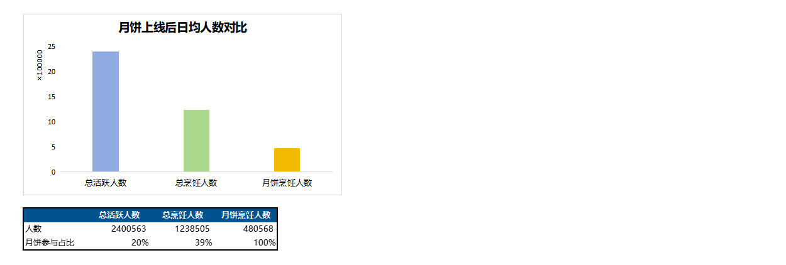
📎 原文：第九周周报
📌 mkk 评语
节日食谱是低成本的内容更新手段，参与率 20%，月饼占总烹饪 39%。但新鲜感衰减快（首日人均 20 次 → 第三日 17 次），需要更高频的食谱轮换。
W23 原文（2024.12.16-12.22）— 新食物烹饪
林里手打柠檬茶上线首日烹饪率接近 50%，总烹饪率 41%，且人均烹饪次数较高；小狗相关食物总烹饪率 45%；圣诞小蛋糕总烹饪率较低，仅 25%
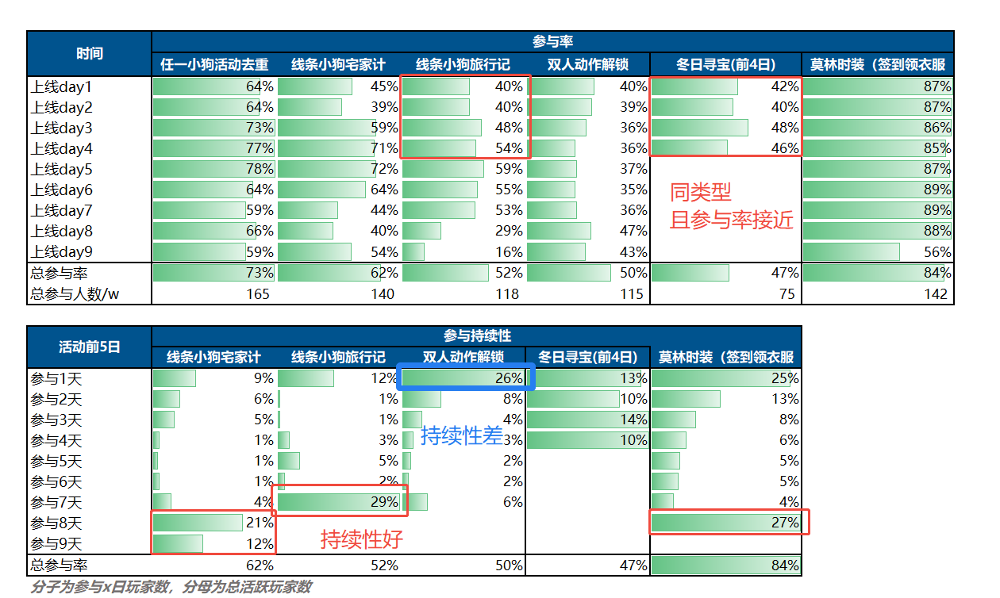
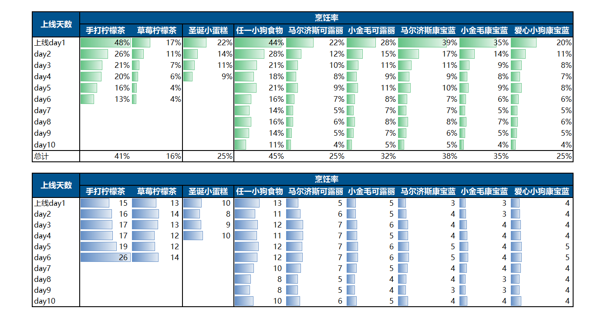
📎 原文：第二十三周周报
📌 mkk 评语（W9+W23）
两次食谱上新验证了同一规律：联动/节日食物参与率 20-45%，是低成本但有效的内容更新手段。W23 柠檬茶(41%)和小狗食物(45%)的参与率远高于圣诞蛋糕(25%)，说明与当前版本主题(小狗联动)关联的食物参与度更高。
C11. 负载/建造分析
追踪范围：W20 → W25（连续 6 周） | 当前状态：持续跟踪中
W20 原文（2024.11.25-12.01）
11.28 负载从 18w 提升至 22w。日活中已有 13% 的玩家负载超过 18w，1% 达到 22w
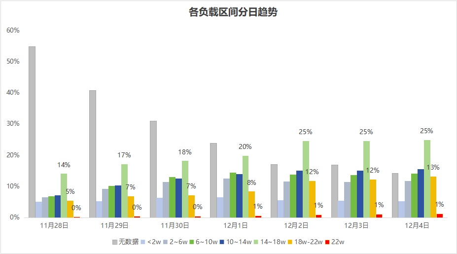
1128 至今 150w 去重玩家里，100w 使用了建造功能，14% 超过 18w 负载；高负载玩家中，大R 比例更高
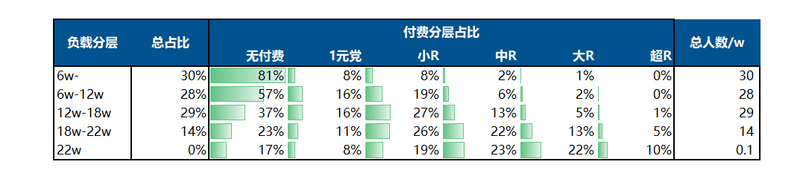
负载更新后，建造功能使用率略有提升
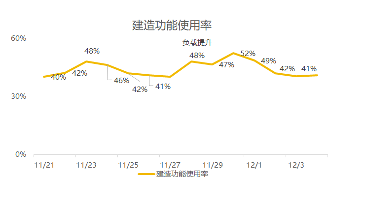
📎 原文：第二十周周报
W21 原文（2024.12.02-12.08）
高负载（18-22w 区间）玩家相比上周占比提升约 3pp，目前占比达到日活的 16%；22w 满负载玩家占比提升 1pp，达到日活的 2%
本周活跃玩家中，106w 玩家使用了建造功能；低负载的 0 氪和小R 玩家占比较高，高负载和满负载的大超R 比例较高
11-28 更新后，近两周建造功能使用率和人均建造次数有所提升；高负载和满负载玩家的建造功能使用率较高
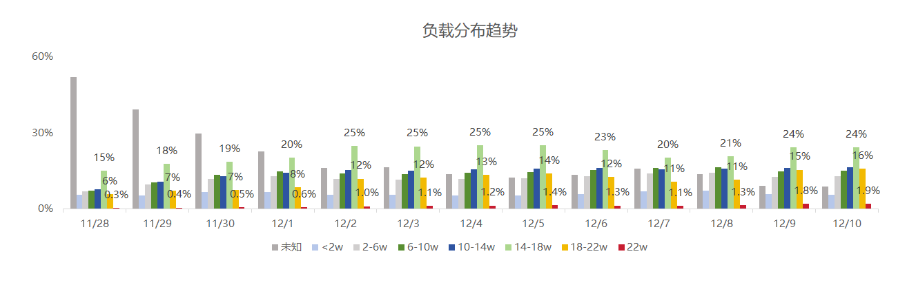
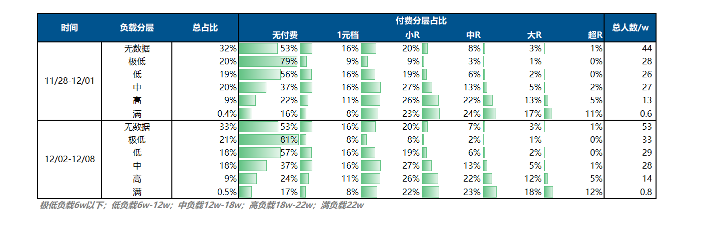
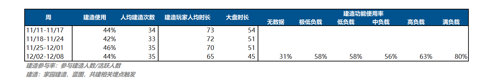
📎 原文：第二十一周周报
W22 原文（2024.12.09-12.15）
周活前 10% 玩家负载均值 19.5w，平均每周增长 0.4w；满负载玩家占比 0.6%
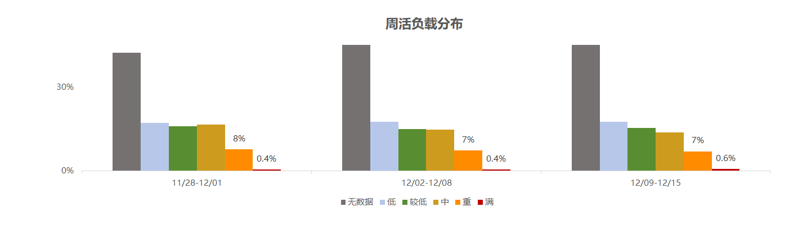
📎 原文：第二十二周周报
W23 原文（2024.12.16-12.22）
负载相关数据优化了统计口径。周活的 10% 分位数玩家的负载为 19.1w，平均每周增长 0.3w；满负载玩家占比达到 2.4%，平均每周增长 0.4pp；负载还存有增长空间
本周建造的参与率 50%（+4pp）和参与次数（+4）明显增长，猜测是玩家摆放小狗家居等物品的影响
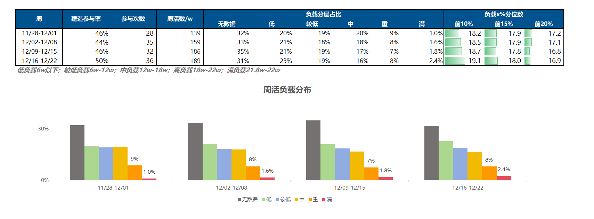
📎 原文：第二十三周周报
W24 原文（2024.12.23-12.29）
本周玩家负载上涨较多，周活的 10% 分位数玩家的负载为 19.7w，满负载玩家占比达到 3%
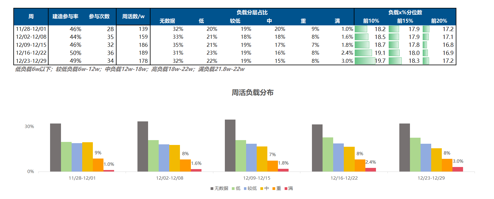
📎 原文：第二十四周周报
W25 原文（2024.12.30-01.05）
本周玩家建造参与率下降，因此无负载数据上报的玩家占比增加，整体负载与上周基本持平没有增长
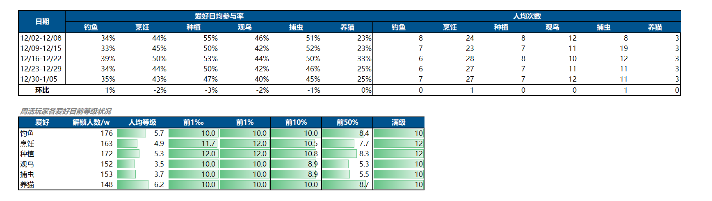
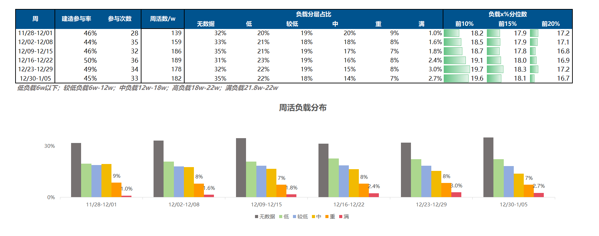
📎 原文：第二十五周周报
W26 原文（2025.01.06-01.12）
建造参与率持平，整体负载没有增长
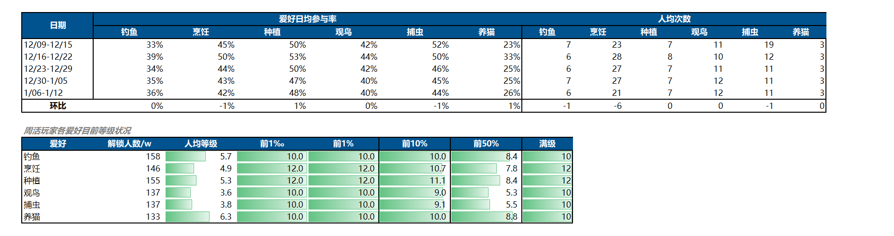
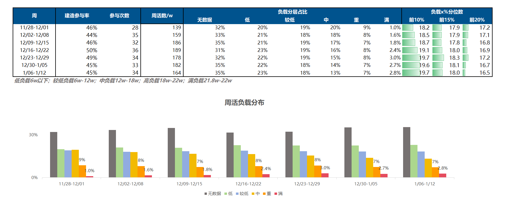
📎 原文：第二十六周周报
W27 原文（2025.01.13-01.19）
建造参与率增长较多54%（+9pp），满负载增长至3.2%
更新前一周日建造率26%，更新当天建造参与率达到55%，更新后一周平均建造日参与率38%
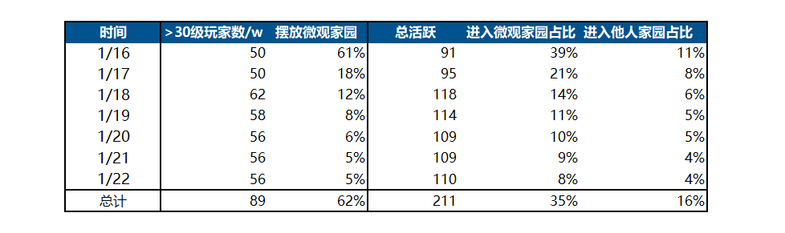
📎 原文：第二十七周周报
W28-29 原文（2025.01.20-02.02）
春节期间建造参与率53%（+7pp），建造人均次数37（+3pp）
满负载增长至4.6%，前10%负载用户已突破20w
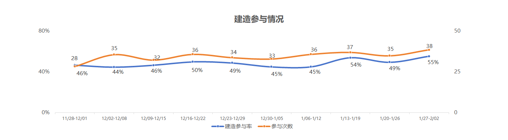
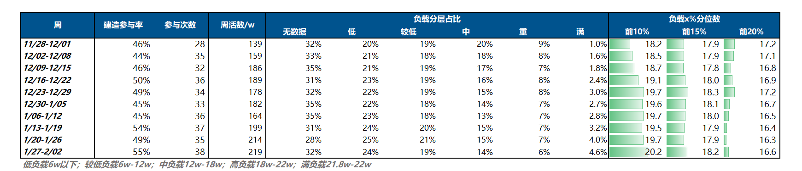
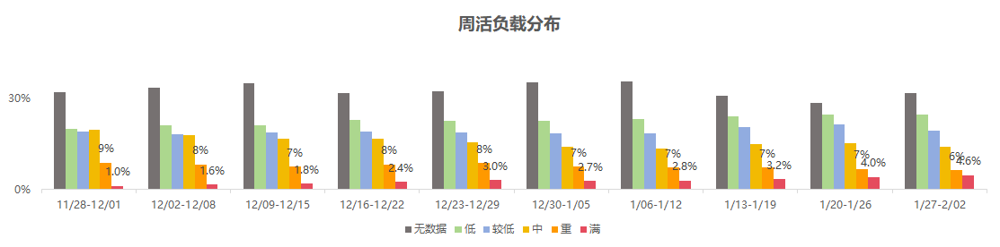
📎 原文：第二十八&九周周报
W30 原文（2025.02.03-02.09）
本周建造参与率50%（-5pp），建造人均次数39（+1pp）
用户负载增长较快。本周满负载占比已增长至5.4%，前10%负载用户达到突破20.7w
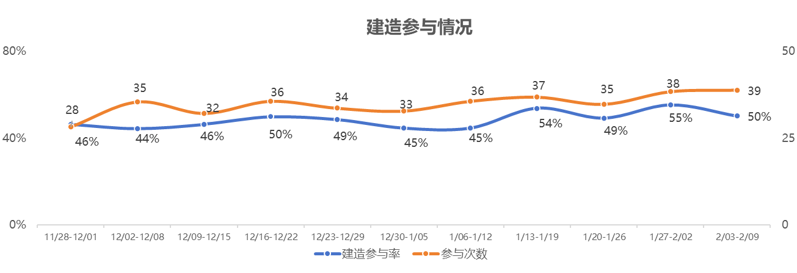
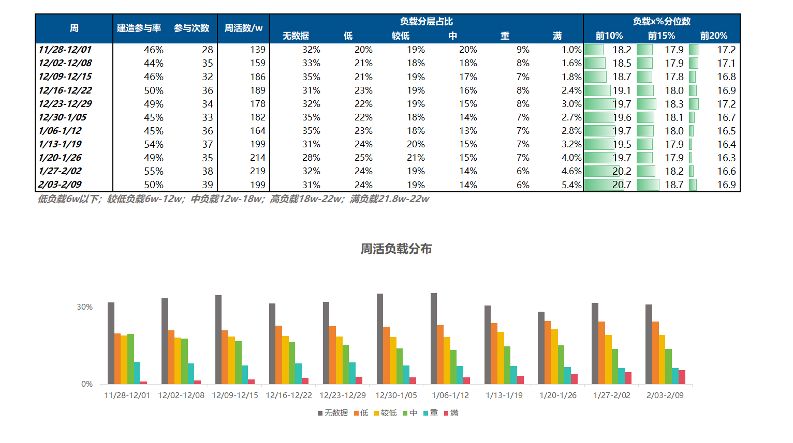

📎 原文：第三十周周报
📌 mkk 评语（W20-W25）
建造深度与付费深度正相关——高负载玩家大R 比例更高。W20-W24 负载持续增长：前 10% 玩家从 18w→19.7w，满负载占比从 2%→3%。11-28 更新和小狗家居上线均带动了建造参与率提升（W23 参与率 50%，+4pp）。但 W25 出现建造参与率下降信号，说明联动内容的刺激效果有限，负载增长需要持续的新内容驱动。
C17. 线条小狗联动活跃活动
追踪范围：W22 → W24（3 周） | 当前状态：活动结束
W22 原文（2024.12.09-12.15）— 活动上线
小狗本次上线 3 个活跃向活动：线条小狗宅家记（基础向简单活跃任务），线条小狗旅行记（进阶任务，猜谜定位，顶泡泡），双人动作解锁（社交向，奖励一个动作解锁）
参与率：由于需要做任务，因此小狗的 3 个活动参与率（50% 左右）低于纯签到的活跃向活动（85%）；参与任一小狗活动的玩家占比达到 70%
持续性：线条小狗宅家记和线条小狗旅行记的持续性较好，活动前 5 日，有 15%-25% 占比的玩家每天都参与任务并领取奖励；双人动作解锁活动的持续性不好，推测受参与门槛影响
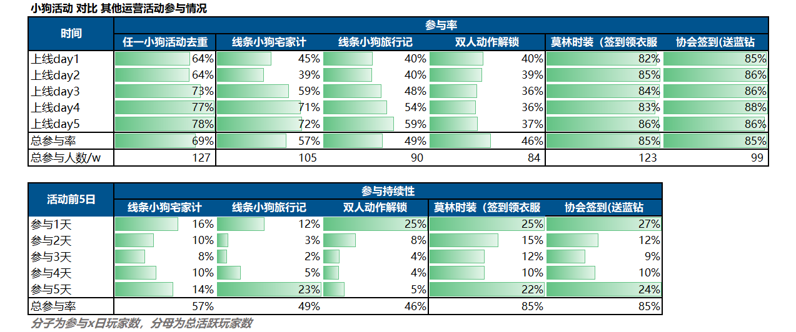
📎 原文：第二十二周周报
W23 原文（2024.12.16-12.22）— 活动进行 + 圣诞寻宝
小狗 3 个活动 + 圣诞上线 1 个活动：冬日寻宝（猜谜定位顶泡泡，4 个）
参与率：宅家记最简单，参与率最高（62%）；冬日寻宝和小狗旅行记一样，都是猜谜顶泡泡，上线前 4 日参与率接近 50% 左右
持续性：宅家记和旅行记的持续性较好，参与的玩家中大部分都能坚持到最后；而双人动作解锁持续性差，参与用户中有一半的仅参与 1 天
📎 原文：第二十三周周报
W24 原文（2024.12.23-12.29）— 活动结算
参与率：宅家记最简单，总参与率最高（62%）；冬日寻宝和小狗旅行记都是猜谜顶泡泡，最终参与情况也和小狗旅行记接近总参与率都是 40%+，并且 30%+ 的玩家能全部拿满
持续性：宅家记和旅行记的持续性较好；而双人动作解锁持续性差，参与用户中有一半的仅参与 1 天
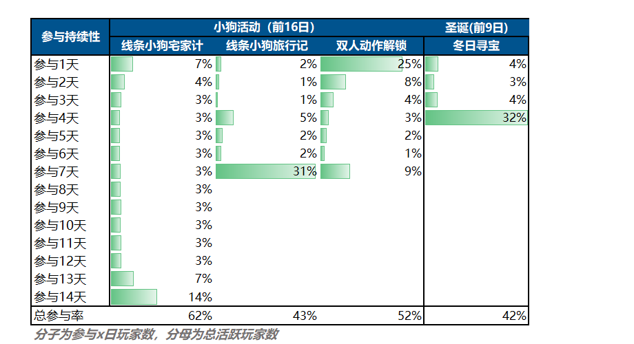
📎 原文：第二十四周周报
📌 mkk 评语
小狗联动活跃向设计的核心发现：任务型活动参与率(50-62%)天然低于纯签到(85%)，但持续性分化明显。宅家记(基础任务)参与率最高且坚持到底的比例也最高；猜谜定位类(旅行记、冬日寻宝)参与率约 40-50%，30%+ 能全满；双人动作解锁是明确的失败案例——半数用户仅参与 1 天，社交门槛过高。活跃向活动的设计原则：低门槛 > 高门槛，单人 > 双人。
C18. 爱好系统追踪
追踪范围：W21 → W24 | 当前状态：持续跟踪中
W21 原文（2024.12.02-12.08）
养猫爱好在解锁靠后的前提下，其人均等级、前 10% 和前 50% 玩家等级已经远超其他爱好，建议提升养猫爱好进阶玩法开发的优先级，增加玩法深度
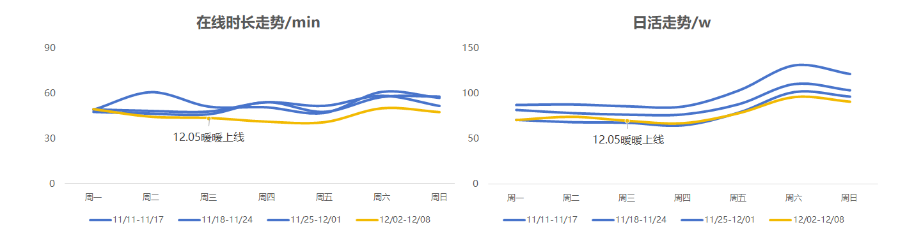
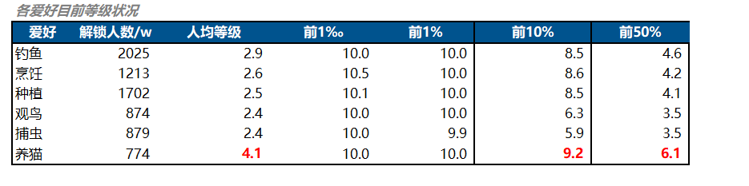
📎 原文：第二十一周周报
W23 原文（2024.12.16-12.22）
本周起爱好等级数据口径优化为周活玩家
周活玩家的爱好进度较高，其中钓鱼，种植和养猫的前一半玩家平均等级达到了约 8.5 级，建议增加爱好相关内容开发
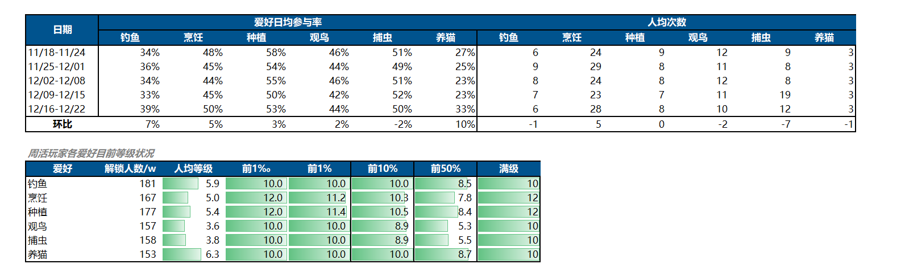
📎 原文：第二十三周周报
W24 原文（2024.12.23-12.29）
周活玩家的爱好进度较高，建议增加爱好相关内容开发
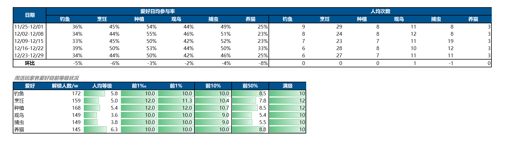
📎 原文：第二十四周周报
W28-29 原文（2025.01.20-02.02）— 雪雕爱好上线
1.25限定图鉴上线后，钓鱼，烹饪爱好参与情况提升明显；贴纸活动上线后，养猫参与率提升明显
1.25上线限定爱好雪雕，参与情况与瓜雕持平。爱好上线前9日数据，参与率59%，人均参与次数57，共同雕刻参与率16%，均与瓜雕相近
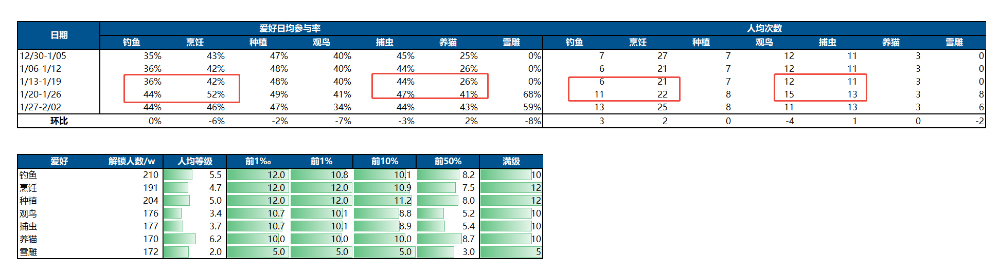
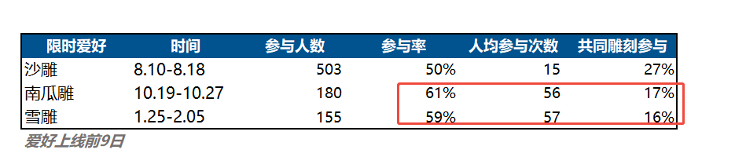
📎 原文：第二十八&九周周报
W30 原文（2025.02.03-02.09）— 雪雕持续性对比
雪雕爱好持续性较好，上线三周，平均日参与率60%，人均次数6.3；瓜雕同期日参与率已跌至22%，人均次数3.7
受BP任务影响，本周观鸟参与率提升至40%（+6pp），捕虫参与率提升至53%（+9pp）
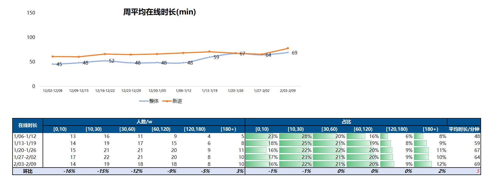
📎 原文：第三十周周报
📌 mkk 评语
养猫是爱好系统中的"超级品类"——解锁靠后但等级远超其他爱好，验证了宠物类玩法的强需求。W23 显示钓鱼、种植、养猫前 50% 玩家均达 8.5 级，爱好系统整体进度较深，周报连续 3 周建议增加爱好内容开发。这与小狗联动的高参与率形成呼应：玩家对"活的/可互动的"内容有强烈偏好。
C19. 版更回流分析
追踪范围：W25（一次性分析） | 当前状态：W25 后未再出现
W25 原文（2024.12.30-01.05）
对比 10, 11, 12 月的 3 次版更，通过 7 日回流数量、回流玩家活跃度、以及回流后周留存率指标，量化召回的数量、质量和持续性
小狗&下雪版更召回玩家数量提升最多（+21w），回流玩家的周活占比显著提升（+11pp）；而奇灵夜和 1128 换包冷更的周活占比提升不明显
小狗&下雪版更召回玩家的活跃度明显更高，中重度用户占比更高。但同时发现每周的回流用户的整体活跃度都相对较低，无版更时的参照周轻度玩家占比 90%
小狗&下雪版更召回玩家的活跃持续性好，周留存提升最明显（+15pp）
版本流失分析：1128 版更造成一周内 25w 用户未登录，其中 14w 在一个月内恢复登录，11w 流失
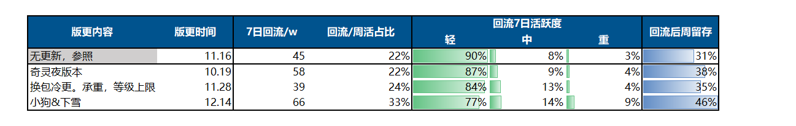
📎 原文：第二十五周周报
📌 mkk 评语
首次系统化的版更回流效果对比。小狗&下雪版更在数量(+21w)、质量(中重度占比高)、持续性(周留存+15pp)三个维度全面领先，验证了"有明确内容卖点的版更"远强于"换包冷更"。但也揭示了一个结构性问题：无版更时回流用户 90% 是轻度玩家，说明回流用户本质上是"试探性回来看一眼"，要真正留住需要更强的首日体验设计。1128 版更导致 11w 用户永久流失是一个警示信号。
C20. 微观家园
追踪范围：W27 → W28-29 | 当前状态：参与率快速衰退
W27 原文（2025.01.13-01.19）— 功能上线
参加微观家园功能玩家占比较高。自1/16微观家园上线一周，30级以上活跃玩家89w，摆放微观家园的占约55w人，占比62%；
微观家园互动占比不高，社交互动玩法待开发。活跃玩家共211w，进入微观家园74w，占比35%；其中进入过他人微观家园的有33w人，占比16%
📎 原文：第二十七周周报
W28-29 原文（2025.01.20-02.02）— 快速衰退
微观家园功能参与情况较差，刚上线时玩家对该功能感兴趣并尝试，但后续不再参与该功能。功能上线以来，参与率24%，其中进入过他人家园的用户占比15%。但功能日参与率和参与人数不断下滑，近7日均参与人数仅5w，参与率5%，进入他人家园占比3%
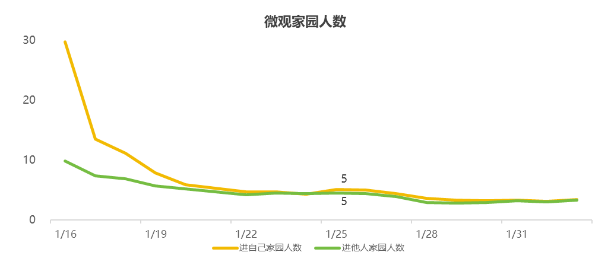
📎 原文：第二十八&九周周报
📌 mkk 评语
微观家园是一个典型的"首周新鲜感"功能——上线首周参与率62%（30级以上），但仅3周后日参就跌至5%。核心问题在于社交互动深度不足：进入他人家园比例从16%降至3%，说明玩家缺乏持续造访他人家园的动力。与建造系统的"高负载≈高付费"正相关不同，微观家园目前与任何变现通路都没有打通。
C21. 更新影响分析
追踪范围：W27（一次性分析） | 当前状态：W27 后未再出现
W27 原文（2025.01.13-01.19）
背景：本次更新遇到问题，更新失败时弹窗修复，当玩家点击修复会清理掉所有资源导致全部重新下载，而非业界通常的完整性校验+仅下载损坏/未下载文件
7日内账号/设备登录比：本次更新登录比84%（基准-5%），低于前两次热更87%，高于冷更87%
分日数据：本次更新1/16当天，登录比降低至84%，仅稍高于冷更83%；截止1/21日，登录比恢复至94%，接近但仍稍低于之前更新的恢复水平（约95%+）
1月16日4-6点游戏内更新，1月16日14:30做了更新失败的缓解措施，1月17日4-5点又做了一波策略调整
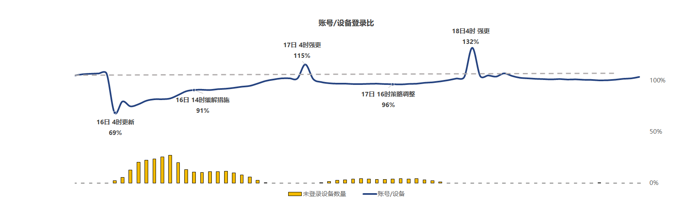
📎 原文：第二十七周周报
📌 mkk 评语
这是一次有参考价值的更新事故案例。"更新失败→清理全部资源→全量重下载"的bug让7日登录比降至84%(基准-5%)，仅比1128冷更(83%)好1pp。缓解措施在当天下午实施后次日有所恢复，但截至第5天(94%)仍未完全恢复到正常水平(95%+)，说明更新体验问题的影响需要至少一周才能消散。结合W25发现的1128冷更导致11w永久流失，更新质量对用户留存的影响不可忽视。
C22. 活动玩法专题合集
追踪范围：W28-29 → W83-84 | 当前状态：持续补充中
W28-29 原文（2025.01.20-02.02）
活动形式：玩家通过活跃任务获得贴纸，可以与其他玩家交换贴纸，集齐一套（共3套，分批解锁）可兑换代币（满愿星）
贴纸活动对活跃收益：贴纸活动上线后对每日委托完成率提升不明显，对撸猫和互动浇水提升非常明显
贴纸参与率较高，但凑齐率较低，待活动结束时再观察。凑齐贴纸的玩家分享率较高。具体情况：贴纸活动参与率约62%，曾获得贴纸人数157w；第一套凑齐占比24%，其中有交换行为的玩家占比44%；第二套凑齐占比15%，其中有交换行为的玩家占比47%
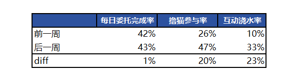
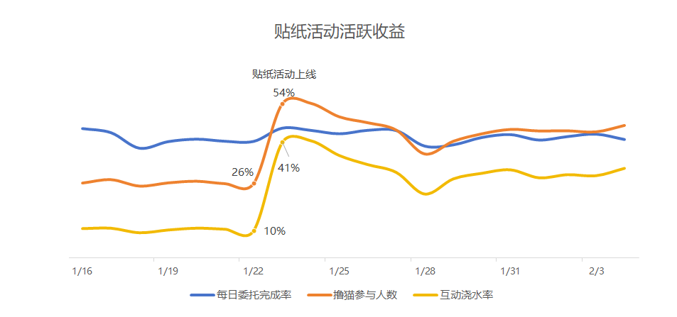
📎 原文：第二十八&九周周报
📌 mkk 评语
贴纸是"活跃拉动型"社交活动的成功案例——参与率62%(157w人)，且对特定行为(撸猫、互动浇水)的拉动"非常明显"，优于对每日委托的拉动。关键设计是"交换"机制：凑齐玩家中约45%有过交换行为，这是少数成功激活了玩家间社交互动的活动设计。凑齐率低(24%/15%)但这反而可能延长了活动生命周期——没凑齐的会继续玩。
C8 雪雕（瓜雕系列·续）
W31 雪雕
雪雕持续性依然较好，日均参与率60%，参与次数5次，原因是雪雕潮流季商店可售卖换取代币。
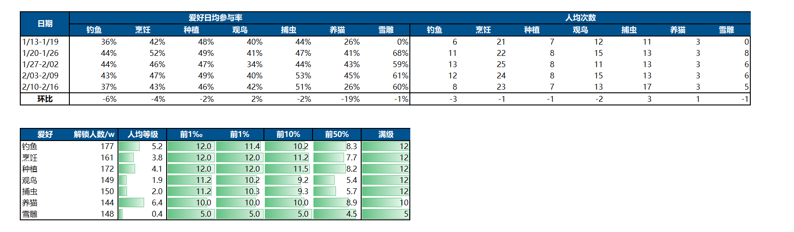
📎 原文：第三十一周周报
📌 mkk: 60%参与率+人均5次/天，这个持续性在爱好系统中属于顶级。核心驱动力是"雪雕→售卖→代币→商店购物"的经济循环，而非雕刻本身的乐趣。一旦潮流季结束这个循环断裂，参与率大概率跳水。
W32 雪雕持续性归因
雪雕日参与率 61%。每日委托雪雕的日提交率平均 51%，雪雕平均日出售参与率为 20%。上线第一周有 39% 的玩家为了出售而雪雕，23% 的玩家只是为了刷每日任务。近一周有 23% 的玩家为了出售而雪雕，39% 的玩家只是为了刷每日任务。
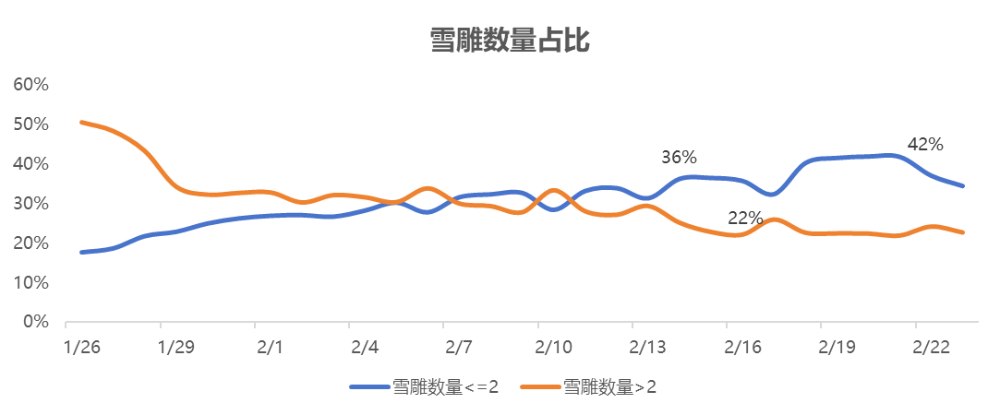
📎 原文：第三十二周周报
📌 mkk: 动机发生了完美的对称翻转——售卖动机从39%→23%，每日任务动机从23%→39%。说明代币经济的新鲜感消退后，雪雕被"每日委托任务化"了。参与率仍维持在61%是因为任务体系兜底，但玩家真正在"享受雕刻"的比例可能很低。这是所有爱好系统的共性挑战：当外部激励褪去，内在乐趣能否撑住？
C11 负载/建造
W33 新用户建造参与深度分析
留存到第4周的新玩家中，有 25% 的玩家建造成功了第一套房屋，有 22%-32% 的玩家不参与建造玩法。限制玩家建造的原因排除：负载和地块限制（增长速度超过需求），建材解锁数量限制（因为投放途径多），家具购买限制。家具组合引导的任务完成率超过 80%，但除首套外，其他家具组合使用率极低（第三套仅2.4%）。家具组合使用难点：解锁套装需要完成不同的新手任务；缺失单件家具时需一个个记住、制作后才能摆放。
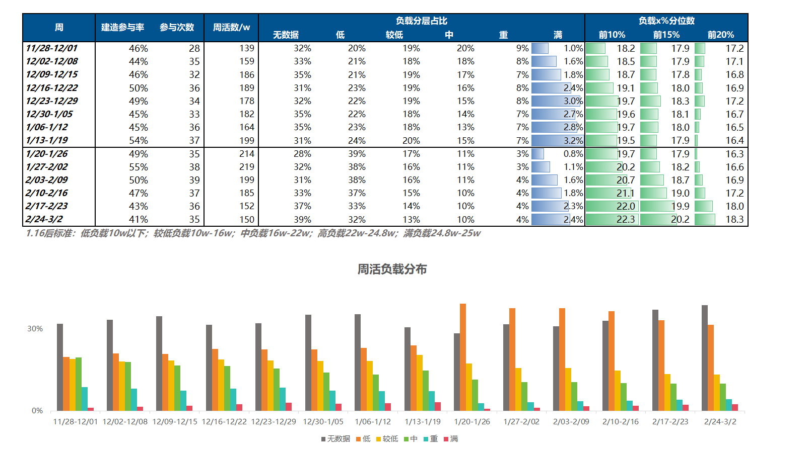
📎 原文：第三十三周周报
📌 mkk: 非常扎实的排除法分析。资源不是瓶颈（负载/地块/建材都够），引导完成率也不低（80%），问题出在"从引导到自主建造"的断层——第一套家具组合靠任务推着走，后续没了推力就停滞。家具组合使用率近乎为零揭示了UX痛点：缺件时无一键购买/制作的流畅路径。这是典型的"最后一英里"问题，功能都在但体验碎片化。
C18 爱好系统
W39 养狗
养狗上线6日内（4.10-4.15），83% 活跃用户达到养狗条件，66% 活跃用户领养狗。宠物（猫+狗）互动度提升，参与率 79%（+18pp），日均互动次数 9.7 次（+4.9次）。养狗参与度分层较为平均，24% 的玩家与狗总共互动20次以上。回流拉动：养狗上线6日拉动回流 40w 用户（对比上周BP拉动回流 32w 用户）；但回流用户养狗参与率 48%，不算很高，21% 没达到养狗条件。捡屎参与率 22%，玩家反馈需要增加提示。领取较多的是田园犬、雪橇犬和牧羊犬；拉布拉多、比格犬、斑点犬和金毛领取数量少。
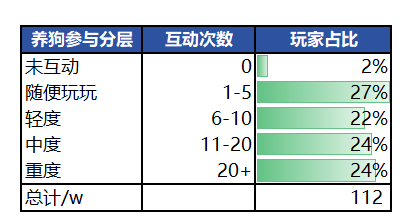
📎 原文：第三十九周周报
📌 mkk: 养狗的回流拉动力（40w）超过BP（32w），验证了"内容更新>付费刺激"的回流逻辑。但回流用户养狗参与率仅48%、21%未达条件，说明回流玩家的等级断层是阻碍。66%领养率很高，但互动深度分布"较为平均"意味着没有形成高粘性核心群——和养猫的长期衰减路径可能类似。品种偏好呈现明显的"国民犬种偏好"（田园犬、雪橇犬），小众犬种吸引力不足。
C22 贴纸活动
W36-37 贴纸活动（养猫联动）
3.13-3.31受贴纸活动中撸猫任务影响，养猫参与率提升34% → 50%（+16pp）。
📎 原文：第三十六&三十七周周报
📌 mkk: 贴纸活动通过任务绑定拉升了养猫参与率16pp，效果显著。这印证了W32雪雕的发现——爱好系统的参与率高度依赖外部任务驱动。活动结束后养猫参与率大概率回落，持续性是老问题。
C23 600号运营活动
W33 600号运营活动
游戏内完成与3个NPC的交谈问卷，以及600号合影，共4个任务可领取奖励；点击树洞倾诉，跳转web端可写小日记；可以将该活动分享给好友。问卷任务完成率 55%，进入树洞倾诉参与率 19%，提交秘密参与率 5%。

📎 原文：第三十三周周报
📌 mkk: 漏斗陡峭——55%→19%→5%的逐级衰减说明玩家对"轻互动+领奖"有兴趣，但"跳转web端写日记"的额外摩擦劝退了大部分人。游戏内→web端的跳转天然有高流失，5%的提交率建议未来类似UGC活动尽量在游戏内闭环。
C24 自建小镇
W36-37 自建小镇
至今去重参与率 5%，单日峰值 2.7%（周末每天 1w 个自建小镇，周中 0.5w 个）。参与深度：28% 的小镇持续3-5小时，37% 的小镇持续6-10小时；3-5人的小镇占 36%，6-10人占 35%。
📎 原文：第三十六&三十七周周报
📌 mkk: 5%参与率不高但参与深度惊人——37%小镇持续6-10小时，这是高度沉浸的社交场景。"周末是周中2倍"符合社交游戏的典型模式。小规模高深度的特征说明自建小镇的核心用户是"社交型重度玩家"，未必需要追求大面积覆盖，而是做好这群人的体验。
C25 小蓝环岛
W36-37 小蓝环岛走格子
活动机制：免费（每日委托每天5个）+ 付费（¥1.5/个，礼包半价）获得骰子，走大富翁格子解锁进度条家具/服装，蓝宝购买额外商品。小蓝活动整体参与率 72%，参与玩家中 33% 轻度参与，50%+ 每日委托拉满，23% 付费参与。大部分玩家主要通过免费方式获得骰子，心钻总流水137w。全体玩家的每日任务委托完成率 48%→58%（+9.9pp）。
📎 原文：第三十六&三十七周周报
📌 mkk: 72%参与率+仅23%付费，说明小蓝是一个成功的"活跃拉升工具"而非付费工具——每日委托完成率被它拉高了10pp。¥137w的流水对一个活动来说偏轻，但如果定位是"用低成本骰子培养日活习惯"，那ROI其实很好。
W38 小蓝环岛（续）
近一周小蓝平均每日 52w 参与，平均每日参与率 63%。4.14小蓝结束后会给出完整活动复盘数据。
📎 原文：第三十八周周报
📌 mkk: 日参与率63%在活动末期仍然很高，小蓝的长尾效应优秀。
W39 小蓝复盘
整体参与：小蓝参与人数 205w，参与率 84%；平均每日参与 84w 人，日参与率 63%，人均获得骰子 32 个。付费情况：玩家获得骰子中，95% 为免费获得，5% 为付费获得，心钻总流水 341w。57% 的用户轻度参与，仅 3% 的玩家投掷 125 次以上（不需要氪金）。
📎 原文：第三十九周周报
📌 mkk: 终盘数据印证判断——84%参与率是"全民活动"级别，但95%免费骰子+57%轻度参与说明绝大多数人是"顺手做"而非"深度卷"。¥341w流水来自5%付费骰子，转化效率尚可。小蓝的最大价值是活跃基建而非直接变现，后续复用这个模板时可以考虑提升付费骰子的性价比来提高转化。
C26 双人动作
W40 双人动作
运营活动：玩家双人互动7天后，领取玩家间限定的双人动作。目前是第三期。双人动作的运营活动参与率 55% 左右，横向对比其他运营活动一般（高于猜灯谜，低于签到类和IP加成活动）；活动达成率 20%-25%，玩家达成率较低；平均能和 2 个玩家解锁。新运营活动对双人动作参与率的提升，集中在上线后1~2周内，参与持续性一般。使用最多的还是基础类的"击掌"、"拥抱"、"摸头"等动作。活动下放的动作未能引起广泛传播和使用，建议降低门槛，提升领取率。
📎 原文：第四十周周报
📌 mkk: "7天互动"的门槛把达成率压到20-25%，配合"平均只和2人解锁"说明玩家的稳定社交圈很小。活动动作使用率低于基础动作，本质是"获取成本高+表现力没有质变"——如果高门槛换来的是和击掌差不多的体验，玩家自然不买账。建议缩短达成周期（3天→即时）或提升动作差异化程度。
W41-42 奶茶鼠联动（前9日）
奶茶鼠活动中有3个货币：阿鼠认可，阿鼠好评和薯条。奶茶鼠参与情况不如小蓝。奶茶鼠平均参与人数 41w（小蓝 52w），参与率 45%（小蓝 63%）。奶茶鼠流水高于小蓝，活动前9日流水 ￥408w（小蓝总流水￥ 341w）

📎 原文：第四十一&四十二周周报
📌 mkk: "参与低但流水高"的矛盾组合——三货币系统可能增加了付费深度但提高了理解门槛，导致泛用户参与意愿下降。相比小蓝的简洁玩法，奶茶鼠的设计更偏向付费用户变现。
W43 奶茶鼠联动（总结）
奶茶鼠参与人数 99w（小蓝 148w），参与率 42%（小蓝 64%）。奶茶鼠流水高于小蓝，活动流水 ￥728w（小蓝￥ 341w）
📎 原文：第四十三周周报
📌 mkk: 活动结束时参与率仍比小蓝低22pp，但流水翻倍多（728 vs 341），确认了"窄受众高ARPU"的变现模型。未来联动活动需权衡：是追求广覆盖（小蓝式）还是深变现（奶茶鼠式）？
W41-42 花瓣雨活动
花瓣雨5.1日6-24h；5.2日12-18h，5.3日18h-24h。首日提升幅度明显，后续效果减弱
📎 原文：第四十一&四十二周周报
📌 mkk: 限时场景活动的边际效用递减很快，首日之后玩家新鲜感消退。未来类似活动可考虑缩短持续时间但增加稀缺性。
W41-43 建造&负载（五一后回落）
W41-42：本周建造参与率44%，建造人均次数36。
W43：本周建造参与率42%，建造人均次数37。
📎 原文：第四十一&四十二周周报 / 第四十三周周报
📌 mkk: 五一假期后的建造热度没有像活跃那样快速塌陷，44%→42%的回落幅度相对温和，说明建造已经开始具备稳定周常属性。它未必是最强的拉新工具，但对托住时长和核心用户参与深度很有价值。
W44-45 建造&负载（庆典拉动）
W44: 本周建造参与率 47%，建造人均次数 40。建造参与度提升，原因是本期稚趣园BP投入了大量游乐园主题家具
W45: 本周建造参与率 47%，建造人均次数 43，建造参与度提升，满负载用户占比达到 3.4%
📌 mkk: 庆典家具拉动建造参与的效果显著且持续两周，人均次数从40→43说明玩家在持续搭建而非尝鲜即走。满负载3.4%是阶段性高点，建造深度在持续释放。
W45 爱好系统（精通上线）
5.15精通系统上线，种植参与率53%（+7%）；5.24捕虫事件上线，捕虫参与率57%（+7%）。新庆典上线，各爱好参与率均有所上涨
📎 原文：第四十五周周报
📌 mkk: 精通系统对爱好参与率的拉动立竿见影（+7pp），说明"进阶目标"是激活沉默玩法的有效手段。值得评估是否在其他爱好模块复制类似机制。
W46 旱地龙舟活动
旱地龙舟参与人数83w，参与率55%，人均参与3.5次。54% 的玩家完成了第一个任务（12个目标点），完成所有龙舟任务的完成率为 28%。龙舟售价￥18。共 3.2w 玩家购买龙舟，购买率 2.1%，心钻流水 57w，售卖情况稍低于情人节自行车返场
📎 原文：第四十六周周报
📌 mkk: 55%参与率但仅28%完成全部任务，漏斗衰减率高。龙舟购买率2.1%低于自行车返场，可能是交通工具类道具的新鲜感已过——玩家拥有的交通工具越多，新增品的边际价值越低。
W46-W52 建造&负载（持续追踪）
W46：本周建造参与率44%，建造人均次数41，满负载用户占比3.1%。
W47：建造参与率45%，建造人均次数46为历史新高，满负载用户占比3.3%。
W48：建造参与率42%，建造人均次数44，满负载用户占比3.0%。
W49：建造参与率45%，建造人均次数41，满负载用户占比2.6%。
W50：建造参与率46%，建造人均次数39，满负载用户占比2.5%。
W51：建造参与率49%，建造人均次数40，满负载用户占比2.4%。
W52：建造参与度新高，参与率51%，建造人均次数42，满负载用户占比2.5%。
📎 原文：第四十六周周报 / 第四十七周周报 / 第四十八周周报 / 第四十九周周报 / 第五十周周报 / 第五十一周周报 / 第五十二周周报
📌 mkk: 这7周里建造参与率基本稳定在44%-51%，人均次数维持在39-46次，说明建造已经从“节庆家具拉动”过渡到“高位稳态追踪”。满负载占比看着不高，但一直贴着2.4%-3.3%的高位运行，实际上已经为W53-W55的负载预警埋下伏笔。
W47 建造&负载（人均次数新高）
建造参与率 45%，建造人均次数 46 为历史新高，满负载用户占比 3.3%
📎 原文：第四十七周周报
📌 mkk: 人均建造次数突破历史新高（46次），对应游乐园大卡池带来的大量新家具。卡池付费→建造消耗→满足感→下次付费的循环正在强化。
W49 拼图（上线）
今日上线拼图，目前有 16w 人参与，参与率约 48%，人均 10 次
📎 原文：第四十九周周报
📌 mkk: 首日参与率48%和人均10次说明拼图玩法的初始吸引力不错。作为轻度休闲玩法，能否维持长期参与率是关键。
W51 拼图（持续）
拼图玩法参与率约 55%，目前日参与率 30% 左右，人均参与拼图次数约 5 次。玩家最喜欢摆放的拼图是文艺街口，鲸鱼山景和动物派对
📎 原文：第五十一周周报
📌 mkk: 周参与率55%但日参与率30%，说明玩家大约每3天做一次拼图——已经成为稳定的日常玩法之一。最受欢迎拼图的审美偏好信息可以反哺美术方向。
W51 动物玩法（上线）
动物玩法上线后（7.5-7.9），共 79w 玩家解锁该玩法，解锁率 41% 偏低。任务629041是明显卡点。梅花鹿 76w 解锁人数最多，其他各动物解锁人数接近；目前与动物好感度等级3的玩家还很少。每日触发赠礼玩法的玩家数较少，仅有 12% 左右
📎 原文：第五十一周周报
📌 mkk: 41%的解锁率对于版本主推玩法来说明显不够。任务卡点+赠礼参与率低（12%）暗示玩法的引导和初始体验存在障碍。好感度等级3的玩家很少说明进阶路径设计可能过慢。
W52 动物玩法渗透率分析
背景：上周定位到动物玩法渗透率55%，偏低。定位到"完成任意动物新邻季活动"任务接取率较低，仅67%。玩家需手动接取并完成任意NPC任务（8个里面的一个），此时似乎没有明显的提示，可能会使玩家误认为NPC任务与动物季主线解锁无关联。建议改成自动接取。"动物新邻季活动"任务列表如下。任务本身稍有难度，例如"中南之种"需要找到布兰克（转移到了动物岛）后回家播种
📎 原文：第五十二周周报
📌 mkk: 问题定位很清楚——手动接取+隐含关联+任务难度三重障碍叠加。自动接取是最小成本最高收益的修改。这个案例也提醒：新玩法的解锁路径必须足够直觉化，否则复杂的前置条件会直接吃掉大量潜在参与者。
W52 小马签到活动（预热）
7.10日上线小马签到送限时抽卡券活动，平均每日签到率83%。
📎 原文：第五十二周周报
📌 mkk: 83%的平均每日签到率说明“低门槛签到 + 限时抽卡券”是非常有效的预热工具。它本身不承担深度玩法职责，但对拉高暑期盘子的日活情绪、给后续小马活动蓄水很有帮助。
W53 动物玩法（16日数据）
7.5-7.20（16日），动物玩法参与率 36%；玩家主要行为是喂食动物和与动物互动；动物拜访的参与率较低，原因是 4 级才能解锁。玩家各个动物种群好感度等级主要分布在1-2级。问卷显示有玩家反映动物玩法跑图较远
📎 原文：第五十三周周报
📌 mkk: 参与率36%仍然偏低，且好感度卡在1-2级说明玩家的养成进度远低于设计预期。跑图远+高级功能解锁慢+日常行为有限（喂食/互动单调），核心问题是养成过程的正反馈不够密集。
W53 小马宝莉运营活动
玩家来到和谐之树签到获得宝石，与其他玩家共鸣可以获得更多宝石；宝石数量解锁奖励。3个宝石可以抽卡获得一枚吧唧，多余的吧唧可与其他玩家交换。签到宝石获得参与率 65%，交换率 50%；徽章获得率 40w，交换人数 32w
📎 原文：第五十三周周报
📌 mkk: 65%签到参与率+50%交换率说明社交玩法设计得当——"交换"机制促进了玩家间的互动。不过大部分玩家还没有多余徽章可交换，活动后期交换行为可能井喷。
W53 H5活动
周年庆数据H5回顾参与人数 50w，参与率 19%，完读率 62%。萌兰生日会H5参与人数 61w，参与率 23%
📎 原文：第五十三周周报
📌 mkk: H5活动的参与率在20%左右，完读率62%说明"看了的人愿意看完"但"引入漏斗"是瓶颈。萌兰生日会的参与人数（61w）高于周年庆回顾（50w），IP角色的号召力不容小觑。
W53 建造&负载（满负载预警）
建造参与度新高。参与率 48%，建造人均次数 39，满负载用户占比 2.2%。需要注意的是，满负载玩家比例不高，但是人数已达到 6.3w，接近1月份负载更新前的最高值
📎 原文：第五十三周周报
📌 mkk: 满负载人数6.3w接近历史阈值是一个重要预警——虽然比例（2.2%）看着不高，但绝对人数在周年庆用户大涨的背景下已逼近上限。如果不及时扩容，这批高投入用户的体验会首先受损。
W54 动物玩法（任务渗透率修改效果）
动物玩法参与率稳定每日约 40%。动物玩法任务渗透率修改后效果不明显。7个任务接取率与完成率
📎 原文：第五十四周周报
📌 mkk: W52提出的修改建议落地后效果不明显，说明问题根源可能不仅是任务接取方式，还有更深层的玩法吸引力和引导路径问题。需要更系统性的优化而非单点修复。
W54 建造&负载（满负载人数持续增长）
建造参与度持平。参与率 48%，建造人均次数 39，满负载用户占比 2.5%。满负载玩家人数增长较快，已达到 7.0w
📎 原文：第五十四周周报
📌 mkk: 满负载从上周6.3w增至7.0w（+11%），增速快于用户整体增速。负载扩容已从"值得关注"升级为"需要行动"。
W55 小马宝莉运营活动（收官）
截止8.06日，小马宝莉运营活动共 273w 玩家参与，参与率 63%，其中 40% 的玩家抽卡或交换。有 15% 的玩家集齐了第一套"闪耀"徽章，有 6.3% 的玩家集齐了全部徽章
📎 原文：第五十五周周报
📌 mkk: 63%参与率是运营活动的优秀表现。6.3%集齐全部徽章的深度参与率合理——既保证了核心玩家的成就感，又没有让目标太容易达成。
W55 波仔青蛙王子活动（收官）
波仔青蛙王子运营活动于上周六结束。共 261w 玩家参与，参与率 63%。抽卡玩家中有 21% 获得了全套的资产，未获得全套资产的玩家基本都是因为抽不到荷叶伞
📎 原文：第五十五周周报
📌 mkk: 同样63%参与率说明运营活动的引流能力稳定。但21%全套率+荷叶伞卡点暗示概率分布可能不均——如果玩家普遍卡在同一个物品上，会产生强烈的挫败感，影响后续类似活动的参与意愿。
W55 建造&负载
建造参与度高。参与率 50%，建造人均次数 47
📎 原文：第五十五周周报
📌 mkk: 参与率50%和人均次数47双高，建造已是小镇最稳定的核心玩法之一。周年庆版本带来的大量内容和用户持续推高建造热度。
W55 动物玩法（持续）
主线爱好数据稳定。动物玩法参与率由40%稍提升至43%。
📎 原文：第五十五周周报
📌 mkk: 动物玩法从40%小幅抬升到43%，更像“止跌并进入长尾”而不是二次爆发。说明任务修改和周年庆大盘对它有一定托举，但玩法本身还没有形成新的增长点。
W56 绘画玩法上线
绘画14级开启，渗透率51%，与拼图接近；绘图缝衣渗透率32%。
绘画上线前6日参与112w玩家，人均作画15次，人均画作数8个。绘画参与情况正常，平均每日7次，待观察。
📎 原文：第五十六周周报
📌 mkk: 51%的渗透率是不错的开局，与拼图持平。但需关注后续衰减速度——如果像拼图一样从51%快速滑落至20%以下，说明"新鲜感消耗>玩法深度"的问题在小镇玩法中是通病。
W56 流星雨天气事件
8.12日上线流星雨天气，实时在线提升约5w人每小时。
📎 原文：第五十六周周报
📌 mkk: 短时事件驱动的实时在线提升约5w/h，说明"氛围向"内容对拉活有即时效果。适合作为日常留存工具周期性复用。
W56 微缩家园蓝图
8.7更新了微缩家园蓝图使用功能，但岛屿蓝图参与率未见明显提升。

📎 原文：第五十六周周报
📌 mkk: 蓝图功能的预期是降低建造门槛，但参与率未提升说明"工具到位≠需求到位"——可能是蓝图内容不够丰富，或建造动机本身不足。
W59 动物/拼图/绘画参与度追踪
动物玩法的参与率呈现上升趋势，周参与率从上线的30%上升至目前的52%；而拼图和绘画的参与度目前仍然呈现下降趋势，拼图周参与率26%，绘画17%。是否考虑将拼图和绘画也加入每日委托任务？
📎 原文：第五十九周周报
📌 mkk: 动物的52%参与率持续走高，证明每日委托任务的引导机制非常有效。拼图和绘画缺乏类似的日常驱动，衰减不可避免。加入委托是低成本高收益的干预。
W61 采蘑菇玩法 + 书籍阅读上线
昨日更新上线采蘑菇玩法和书籍阅读功能，上线首日采蘑菇玩法参与度较高。但需注意蘑菇人均获得数量较多，请研发同学衡量是否符合数值预期。
蘑菇采集首日人均获得数量分布，39%的玩家人均获得100个以上。

📎 原文：第六十一周周报
📌 mkk: 首日参与度高是好信号，但39%玩家拿100+说明产出偏多——如果蘑菇后续有经济用途（建造/交易），过高的初始投放会快速贬值。数值校准宜早不宜迟。
W62 家园贴画功能
上线家园贴画功能后绘画参与度上升。
📎 原文：第六十二周周报
📌 mkk: 贴画功能让绘画从"独立玩法"变成了"建造的一部分"，参与度回升说明玩法之间的交叉关联能有效激活沉默功能。
W65 中秋活动(海灯)
海灯活动参与率低于端午龙舟活动。39%的玩家成功燃放了海灯，9%的玩家参与了海灯助力社交。建议加强活动配置引导。
本期中秋相关资产的投放方式是活跃货币金币/满愿星购买，购买率一般。
📎 原文：第六十五周周报
📌 mkk: 39%成功燃放但只有9%参与社交，说明活动的核心社交玩法转化极低。引导缺失是直接原因——端午龙舟的竞技性天然驱动互动，海灯的"静态浪漫"需要更强的机制引导。
W67 活跃下降归因—BP消费进度
上周BP活跃用户与往期BP在同期（截止BP第4周）的等级进度对比，可以发现近2期BP的等级更高，内容消费进度更快，这可能也是主线相关爱好参与度下降的原因之一。
📎 原文：第六十七周周报
📌 mkk: BP内容消耗加速→主线爱好参与度下降，这揭示了一个节奏问题：BP是"限时集中消费"，消耗完后玩家失去目标感。如果BP越来越短期，需要配合更多持续性内容填充空窗。
W67 活跃下降归因—建造时长
拆分玩家家园负载等级，观察游玩时长下降与建造玩法的相关性：
- 在线时长：满负载和高负载的建造玩法核心玩家在线时长下滑明显
- 建造参与率：重负载和满负载（22w-24.8w；24.8w-25w）玩家，建造周参与率相比国庆前分别下降16%/21%
- 建造时长影响：未建造/低负载(10w以下)影响占比0；较低负载(10w-16w)占比18%；中高满负载(16w-25w)占比约1/3。
📎 原文：第六十七周周报
📌 mkk: 这是非常有价值的归因分析。满负载玩家——即建造核心玩家——正在流失时长，而建造是他们时长的主要组成（1/3影响）。这指向建造玩法本身的内容枯竭问题：当负载接近上限、没有新的建造目标时，核心玩家就"没事可做"了。
W68 万圣节活动
活动形式：玩家完成活跃任务或讨要获得糖果代币，使用代币在商店中兑换资产。
参与漏斗：66%的玩家进行了讨糖交互；42%的玩家兑换了资产，28%兑换核心衣服（调皮幽幽装扮服）。相比于往期中秋和端午，门槛低，参与率更高。
资产发放情况：不同类型资产吸引力差距较大，糖果较多的玩家追求核心服装，糖果较少的玩家追求食谱饮料，而家具/动作性价比低，兑换的玩家较少。玩家宁愿不兑换，攒糖果兑换核心服装。
📎 原文：第六十八周周报
📌 mkk: 万圣节的"低门槛+代币兑换"模式参与率(66%)显著优于中秋(39%)和端午，说明活动入口越简单、参与越高。玩家"攒糖果买核心服装"的行为模式再次验证：服装是绝对的需求中心，家具/动作在免费场景下也缺乏吸引力。
W68 研究所玩法
研究所玩法上线一周，研究商品的渗透率52%，研究成功的渗透率38%，最终购买商品渗透率33%。
📎 原文：第六十八周周报
📌 mkk: 52%→38%→33%的漏斗转化率不错，每步折损都在合理范围（27%→13%）。33%的最终购买渗透率说明玩法有实际经济循环价值，不只是"看看就走"。
W69 烹饪爱好参与度大幅上涨
烹饪爱好参与度大幅上涨。玩家烹饪最多的食材为：水果公主蛋糕、红菜汤和果酱肉丸，都是新BP中的食物。
📎 原文：第六十九周周报
📌 mkk: 新BP食物直接拉动烹饪参与度——验证了"主题内容与爱好系统联动"是激活参与度的有效手段。食谱内容的新鲜感是烹饪参与度的核心驱动力。
W71 负载计算标准更新
负载：更新负载计算标准。更新负载分布后如图，最新一周重度负载占比仅0.4%。
📎 原文：第七十一周周报
📌 mkk: 负载标准更新后重度占比从此前数据（~1%+）大幅降至0.4%，可能是计算口径变化而非实际负载下降。后续W74的预制房子上线后负载会重新飙升。
W74 UGC书籍&唱片上线
12.11上线书籍和唱片的UGC玩法，前5日参与数据如下：
- 有43%的玩家参与书籍编辑玩法，30%的玩家出版了书籍，人均1.3本；14%的玩家购买了书籍，人均3.6本
- 有29%的玩家参与了唱片录制的玩法，人均录制1.8个；有17%的玩家购买了音乐唱片
- UGC书籍玩法上线当天参与率达到了46%，目前回落至10%左右；UGC唱片玩法上线当天参与率42%，但回落较快，目前日参与率5%左右
Pros：玩家参与度高，社区讨论较多，玩法曝光多
Cons：有玩家建议加入书籍内容预览以及唱片试听/时长显示，降低盲选成本；录制功能可用性待提高；唱片列表需反复点击显示名字；自己创作多首歌曲只能一次上架2首
📎 原文：第七十四周周报
📌 mkk: UGC玩法首日参与率惊人(46%/42%)，但衰减非常陡峭——5天内分别回落至10%和5%。书籍比唱片持续性更好(10% vs 5%)，可能因为文字创作门槛更低。关键瓶颈在于消费端体验——"盲选"是大问题，买到空书籍/空唱片的体验会严重损害复购意愿。优先修复预览/试听功能可能是提升持续参与率的最高性价比手段。
W74 预制房子&建造优化
12.11与建造相关更新内容：
1. 研究所内投放过山车建材，但按照研究进度最快要本周五才能解锁
2. 建造推出了预制房子（完整房子，规模远大于之前的家具组合）
受预制模版等建造优化影响，建造参与度上涨明显。参与率48%，建造人均次数41，人均建造时长2.5小时。
负载上涨明显，重负载占比从1.2%上涨至2.5%；满负载从0.1%上涨至4.3%。已经有4.9w玩家再次达到满负载水平。
📎 原文：第七十四周周报
📌 mkk: 预制房子是建造体系的里程碑式更新——参与率一周内从39%跳涨至48%(+9pp)，满负载占比从0.1%暴涨至4.3%(43倍)。4.9w玩家达到满负载，说明"现成房子"极大降低了建造门槛，把大量"想建但不会建"的玩家激活了。但负载飙升也意味着需要尽快跟进负载上限扩容，否则会成为建造热情的天花板。
W75 过山车玩法
过山车玩法存在渗透率低的问题，目前约3000人体验了该玩法，参与率仅0.2%。
相关数据已同步功能策划，原因如下：
1. 研究所门槛高。玩家需要达到3级才能研究过山车相关部件，到达3级目前仅13667人，渗透率0.9%
2. 研究时间过长。过山车车体研究需要1.5天，但基础轨道研究需要6.5天。目前过山车部件上架2周，仅有1278人研究成功基础轨道，1013人购买轨道，720人搭建了轨道
过山车玩法玩家评价——PRO：关键词"创意""社交""适合聚会打卡"，甚至有玩家愿意付费玩。CON：实验室门槛高；卡顿速度慢，人多难进（帧率下降严重成PPT）；建议优化性能。
📎 原文：第七十五周周报
📌 mkk: 过山车是典型的"高期待低触达"玩法——玩家评价积极（甚至愿意付费），但从3级研究所(0.9%)到购买轨道(1013人)到搭建(720人)的层层漏斗极其陡峭。6.5天研究基础轨道是最致命的瓶颈——两周只有1278人成功解锁。性能问题（PPT帧率）则限制了社交传播。这不是需求问题而是准入设计问题。
W76 过山车数据更新
截止12.29日，有8000多玩家体验了过山车玩法。参与率从0.2%上涨至0.5%。
📎 原文：第七十六周周报
📌 mkk: 两周从3000人增长至8000人，参与率翻倍但绝对值仍极低(0.5%)。按这个速度需要数月才能达到有意义的渗透率，如果不降低研究所门槛，过山车可能永远是小众玩法。
W81 滑冰上线
1.31日滑冰随潮流季上线，参与度良好。前5日共94w玩家参与，参与率56%（分母为活跃）。37%的玩家获得了冰面地板，但只有11%的玩家搭建了自己的滑冰场。5%的玩家进行了双人牵手滑冰。
📎 原文：第八十一周周报
📌 mkk: 滑冰参与率56%远超过山车(0.5%)甚至预制房子带动后的建造(48%)，说明"简单+即时乐趣"的低门槛设计是提升渗透的关键。不过从获得冰面(37%)到搭建(11%)到双人互动(5%)的漏斗依然陡峭——大部分玩家获得了地板但没搭场地，社交玩法转化仍是难题。
W82 滑冰更新（前11日）
前11日共128w玩家参与，参与率60%（分母为活跃）。35%的玩家获得了冰面地板，12%的玩家搭建了自己的滑冰场。10%的玩家进行了双人牵手滑冰。
📎 原文：第八十二周周报
📌 mkk: 11日后参与率从56%提升至60%，搭建率和双人互动率也微幅上涨(11%→12%，5%→10%)。双人牵手从5%翻倍至10%值得注意——社交玩法有滚雪球效应，随着更多人搭建滑冰场，社交互动的机会在自然增长。
W83-84 滑冰追踪
滑冰参与率平稳（部分原因是进了每日委托任务），目前日均参与率20%，人均次数2.6次。
📎 原文：第八十三&八十四周周报
📌 mkk: 从首周56%→60%回落至日均20%，符合玩法上线后自然衰减规律。但20%的稳态高于瓜雕同期(末期12%)和家园共建(7%)，说明滑冰作为常驻玩法有更好的长尾。纳入每日委托是聪明的运营手段，把玩法和日常任务绑定延长了生命周期。